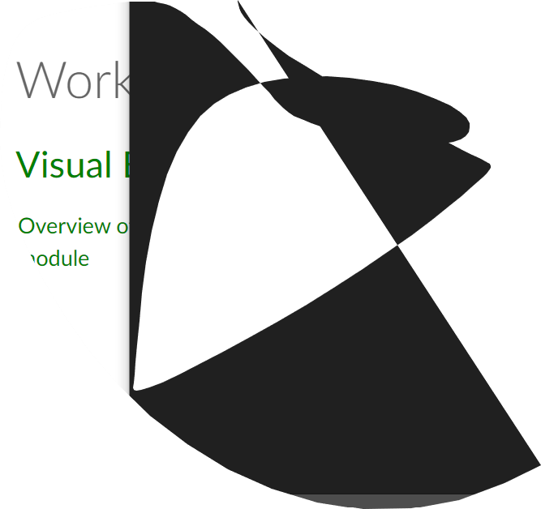

Add a background-image or background-color to your page
Add borders to some of your heading-elements (h1,h2..)
Add new background color and rounded borders to paragraph-element (p)
Try margin and padding-properties to different elements. Try to make the site structure look clearer/prettier.
